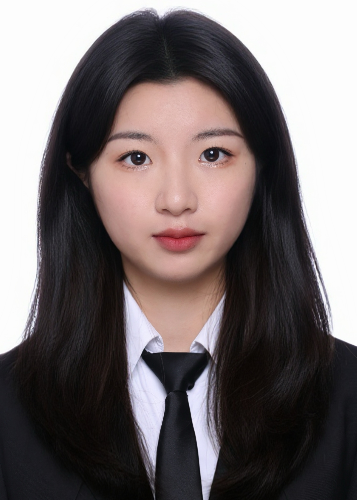

Master's student at Zhejiang University, working on generative audio, audio-centric agents, and multimodal understanding.
📧 Email: yangruiii@zju.edu.cn
📱 WeChat: yrainbow2005
🏠 Address: 浙江省杭州市西湖区浙江大学（玉泉校区）
🐱 Github: yrrainbow
One beginner